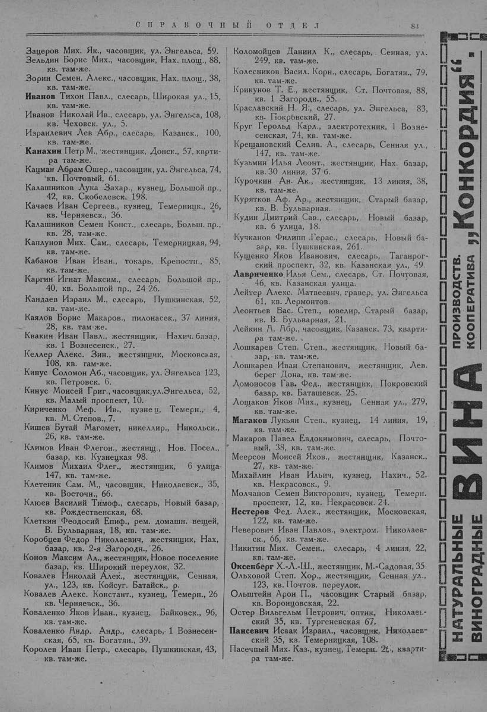

Лист источника 133
Скан

Распознанный текст
СПРАВОЧНЫЙ ОТДЕЛ 83
Зацеров Мих. Як., часовщик, ул. Энгельса, 59.
Зельдин Борис Мих., часовщик, Нах. площ., 88,
кв. там-же.
Зорин Семен Алекс., часовщик, Нах. площ., 38,
кв. там-же.
Иванов Тихон Павл., слесарь, Широкая ул., 15,
кв. там-же.
Иванов Николай Ив., слесарь, ул. Энгельса, 108,
кв. Чеховск. ул., 5.
Израилевич Лев Абр., слесарь, Казанск., 100,
кв. там-же.
Канахин Петр М., жестянщик, Донск., 57, ккварти-
ра там-же.
Кацман Абрам Ошер., часовщик, ул. Энгельса, 74,
кв. Почтовый, 61.
Калашников Лука Захар., кузнец, Большой пр.,
42, кв. Скобелевск. 198.
Качаев Иван Сергеев., кузнец, Темерницк., 26,
кв. Черняевск., 36.
Калашников Семен Конст., слесарь, Больш. пр.,
кв. 28, там-же.
Каплунов Мих. Сам., слесарь, Темерницкая, 94,
кв. там-же.
Кабанов Иван Иван., токарь, Крепостн., 85,
кв. там-же.
Каргин Игнат Максим., слесарь, Большой пр.,
40, кв. Большой пр., 24 26.
Кандаев Израил М., слесарь, Пушкинская, 52,
кв. там-же.
Каялов Борис Макаров., пилонасек., 37 линия,
28, кв. там-же.
Квакин Иван Павл., жестянщик, Нахич. базар,
кв. 1 Вознесенск., 27.
Келлер Алекс. Зин., жестянщик, Московская,
108, кв. там-же.
Кинус Соломон Аб., часовщик, ул. Энгельса 123,
кв. Петровск. 6.
Кинус Моисей Григ., часовщик, ул. Энгельса, 52,
кв. Малый проспект, 10.
Кириченко Меф. Ив., кузнец, Темерн., 4,
кв. М. Степов., 7.
Кишев Бутай Магомет, никеллир., Никольск.,
26, кв. там-же.
Климов Иван Флегон., жестянщ., Нов. Посел.,
базар, кв. Кузнецкая 98.
Климов Михаил Флег., жестянщик, 6 улица,
147, кв. там-же.
Клетеник Сам. М., часовщик, Николаевск., 35,
кв. Восточн., 66.
Клюев Василий Тимоф., слесарь, Новый базар,
кв. Рождественская, 68.
Клеткин Феодосий Епиф., рем. домашн. вещей,
В. Бульварная, 18, кв. там-же.
Коробцев Федор Николаевич, жестянщик, Нах,
базар, кв. 2-я Загородн., 26.
Конов Максим Ал., жестянщик, Новое поселение
базар, кв. Широкий переулок, 32.
Ковалев Николай Алек., жестянщик, Сенная,
ул., 123, кв. Койсуг. Батайск., р.
Ковалев Алекс. Констант., кузнец, Темерн., 26,
кв. Черняевск., 36.
Коваленко Яков Иван., кузнец, Байковск., 96,
кв. там-же.
Коваленко Андр. Андр., слесарь, 1 Вознесен-
ская, 65, кв. Богатян., 39.
Королев Иван Петр., слесарь, Пушкинская, 43,
кв. там-же.
Коломойцев Даниил К., слесарь, Сенная, ул.
249, кв. там-же.
Колесников Васил. Корн., слесарь, Богатян., 79,
кв. там-же.
Крикунов Т. Е., жестянщик, Ст. Почтовая, 88,
кв. 1 Загородн., 55.
Краславский Н. Я., слесарь, ул. Энгельса, 83,
кв. Покровский, 27.
Круг Герольд Карл., электротехник, 1 Возне-
сенская, 74, кв. там-же.
Крещановский Селив. А., слесарь, Сенная ул.,
147, кв. там-же.
Кузьмин Илья Леонт., жестянщик, Нах. базар,
кв. 30 линия, 37 б.
Курочкин Ан. Ак., жестянщик, 13 линия, 38,
кв. там-же.
Куряткоп Аф. Ар., жестянщик, Старый базар,
кв. В. Бульварная.
Кудин Дмитрий Сав., слесарь, Новый базар,
кв. 6 улица, 18.
Кучканов Филипп Герас., слесарь, Новый ба-
зар, кв. Пушкинская, 261.
Кущенко Яков Иванович, слесарь, Таганрог-
ский проспект, 32, кв. Казанская ул., 49.
Лавриченко Илья Сем., слесарь, Ст. Почтовая,
46, кв. Казанская улица.
Лейтер Алекс. Матвеевич, гравер, ул. Энгельса
61, кв. Лермонтов.
Леонтьев Вас. Степ., ювелир, Старый базар,
кв. В. Бульварная, 21.
Лейкин А. Абр., часовщик, Казанск. 73, кварти-
ра там-же.
Лошкарев Степ. Степ., жестянщик, Новый ба-
зар, кв. там-же.
Лошкарев Иван Степанович, жестянщик, Лев.
берег Дона, кв. там-же.
Ломоносов Гав. Фед., жестянщик, Покровский
базар, кв. Баташевск. 25.
Лощаков Яков Мих., кузнец, Сенная ул., 279,
кв. там-же.
Магаков Лукьян Степ., кузнец, 14 линия, 19,
кв. там-же.
Макаров Павел Евдокимович, слесарь, Почто-
вый, 38, кв. там-же.
Меерсон Моисей Яков., жестянщик, Казанск.,
27, кв. там-же.
Михайлин Иван Ильич, кузнец, Нахич., 52.
кв. Некрасовск., 9.
Молчанов Семен Викторович, кузнец, Темерн.
проспект, 12, кв. Некрасовск. 24.
Нестеров Фед. Алек., жестянщик, Московская,
122, кв. там-же.
Неверович Иван Павлов., электром. Николаев-
ск., 66, кв. там-же.
Никитин Мих. Семен., слесарь, 4 линия, 22,
кв. там-же.
Оксенберг Х.-Л.-Ш., жестянщик, М.-Садовая, 35.
Ольховой Степ. Хор., жестянщик, Сенная ул.,
123, кв. Почтов. переулок.
Ольштейн Арон П., часовщик Старый базар,
кв. Воронцовская, 22.
Остер Вильгельм Петрович, оптик, Николаев-
ский 35, кв. Тургеневская 67.
Пансевич Исаак Израил., часовщик, Николаев-
ский 35, кв. Темерницкая, 108.
Пасечный Мих. Каз., кузнец, Темерн. 26, кварти-
ра там-же.
ПРОИЗВОДСТВ.
КООПЕРАТИВА
„Конкордия“.
ВИНА
НАТУРАЛЬНЫЕ
ВИНОГРАДНЫЕ